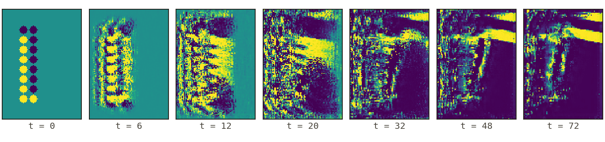

Self-organized boolean computation
Most neural cellular automata are trained to grow and repair shapes13. This one computes instead. One learned rule runs in every cell for many steps. From inputs drawn on the grid, the cells build the answer. Set the bits below and watch the model compute Boolean logic and binary addition, or explore the latent dimensions the network computes in.
Task
Input bits
Grid output
The task
A cellular automaton is a grid of cells that all update by the same local rule, one step at a time. Conway's Game of Life10 is a familiar example. Every cell holds a few numbers. The rule looks only at a cell and its nearest neighbours. In a neural cellular automaton, the rule is a small neural network. Gradient descent trains the rule1. No one writes it by hand. Such rules have grown shapes1, made textures3, built working 3D machines4, classified digits2, and solved graph problems5.
We give the model a task by drawing it on the grid. We place the input bits as circles along the left edge. A bright circle means 1, and a dark circle means 0. The answer must appear as circles on the right edge. We train the model only on whether the last grid matches the target. We never tell it where the input or output is, or which function to compute. To make the answer appear on the right, the cells must move information across the grid over many steps. Living tissue works in a similar way. It routes positional information8 and turns local chemistry into global pattern9. Setting a task as a picture differs from other routes to computation. Some methods wire logic gates into the cells directly6. Others build toward universal automata7.
The rule is small. Each cell reads its 5×5 or 7×7 neighbourhood through three fixed filters: its own value, the horizontal Sobel gradient, and the vertical Sobel gradient. A small two-layer network (about 8,000 weights) then updates the cell's numbers. The same rule runs on every cell for a few dozen steps. Then we read the grid.
The update rule
The design follows the Growing Neural Cellular Automata of Mordvintsev et al.1 It has three parts: a fixed perception step, a small learned update network, and stochastic per-cell updates. One step does the same thing in every cell:
Perceive
The cell reads its neighbourhood through three fixed filters: the cell itself, the horizontal Sobel gradient, and the vertical Sobel gradient. Across the 16 channels, this gives 48 numbers.
Apply the network
The 48 numbers pass through the trained network (48 → 128 → 16, with a ReLU between). This is the only learned part. It is the same in every cell.
Update
We add the 16 outputs to the cell's numbers. One channel stays read-only and always holds the original input. So the model can still see the question after many steps.
Fire and clamp
Only a random fraction of cells update on each step. So the rule cannot depend on a global clock. We clamp the numbers to a fixed range. We repeat the step, then read the grid.
Addition
Addition is not a local operation. The highest bit of 127 + 1 depends on a carry. The carry starts at the lowest bit and passes through every bit above it. A rule that sees only a small neighbourhood cannot compute this in one step. The carry must move across the grid over time. The images below show the visible channel of the 8-bit adder as it computes 127 + 1.

You can run this in Fig. 1. Choose ADD 4-BIT or ADD 8-BIT. Both adders gave the correct sum on every random test we tried. To watch the carry move, scrub the rollout frame-by-frame and follow the hidden channels that carry the wave.
Results
AND, OR, XOR, NAND, NOR, XNOR, majority-of-3, and a two-output half-adder. Each one reached full bit-accuracy on a 48×48 grid.
16 input bits, 9 output bits, and a carry chain of length eight, both operands.
One two-layer network. Every cell uses it on every step.
Some gates are harder than others
The model learns some gates quickly: AND, OR, NAND, and NOR. A single threshold can separate each of these. XOR and XNOR are harder, because the output depends on whether the two inputs disagree. In our benchmark, OR reached full accuracy after tens to hundreds of training steps. XOR sometimes took several thousand.
Three settings that have to be right
Three choices had to be right for the model to learn at all. The table shows XOR (best seed of each setting).
| Setting | Value | Valid bits | Result |
|---|---|---|---|
| Window size | 3×3 | 0.50–0.63 | does not learn |
| Window size | 5×5 | 1.00 | learns |
| Window size | 7×7 | 1.00 | learns (best) |
| Alive masking | on | 0.50–0.63 | does not learn |
| Alive masking | off | 1.00 | learns |
| Weight init | zeros | 0.50–0.63 | does not learn |
| Weight init | non-zero | 1.00 | learns |
A 3×3 window is too small. A signal cannot cross the grid in the number of steps we run. Alive masking comes from image-growing automata. It stops updates in empty regions. Here the empty background does the computation, so masking it prevents learning. A rule whose weights start at zero produces no gradient. So training never starts.
It works on longer inputs than it was trained on
The rule is local, and the bits sit against a fixed edge. So an adder trained on short sums also works on longer ones. Trained on sums of up to 4 bits, it adds 8-bit numbers with more than 99% of bits correct.
| Trained up to | 4-bit | 6-bit | 8-bit |
|---|---|---|---|
| 2-bit sums | 95.3 | 93.7 | 90.5 |
| 3-bit sums | 99.8 | 98.4 | 98.1 |
| 4-bit sums | 99.9 | 99.9 | 99.7 |
| 6-bit sums | 100.0 | 100.0 | 99.8 |
An eight-operation ALU
One rule can also drive a small arithmetic-logic unit. On a 96×112 grid we encode two 8-bit operands and a control column. The control column holds a 3-bit opcode, a carry-in, and a 3-bit condition code. One NCA must produce the 8-bit result, a carry-out, and a branch flag. Trained across all eight operations, the model gets the result byte right about 99.7% of the time. The two flag outputs are weaker. So we treat this as one early run, not a solved task (see below). The panels show its settled grid for one example of each operation. Operands and control are on the left. The answer is read from the column on the right.

Limitations
This is a research prototype. It has clear limits.
A full ALU is hard. We tried to train one model to do eight operations (add, subtract, the bitwise gates, shifts, and rotates), chosen by an opcode. It also had to output a carry and a conditional branch. One run reached a loss near 0.10 after about 900,000 steps. The result was correct about 99.7% of the time. The carry-out (78%) and branch (86%) outputs were still improving slowly. This is one working run, not a solved task.
The outputs are soft. The target is a grey-scale grid, and we read it by thresholding brightness. So a model that gets every bit right still has a mean-squared error of about 0.2–0.4. We report bit accuracy, not loss.
The model is stochastic. Only some cells update each step. So the grid keeps changing a little, and a bit near the threshold can flip before it settles. Fig. 1 averages the output over the last steps, which helps. You are most likely to see a wrong bit on XOR and XNOR.
References
- Mordvintsev, A., Randazzo, E., Niklasson, E., & Levin, M. (2020). Growing Neural Cellular Automata. Distill. The perception + learned-update-rule + stochastic-update architecture this work builds on.
- Randazzo, E., Mordvintsev, A., Niklasson, E., Levin, M., & Greydanus, S. (2020). Self-classifying MNIST Digits. Distill.
- Niklasson, E., Mordvintsev, A., Randazzo, E., & Levin, M. (2021). Self-Organising Textures. Distill.
- Sudhakaran, S., Grbic, D., Li, S., Katona, A., Najarro, E., Glanois, C., & Risi, S. (2021). Growing 3D Artefacts and Functional Machines with Neural Cellular Automata. Proc. ALIFE.
- Grattarola, D., Livi, L., & Alippi, C. (2021). Learning Graph Cellular Automata. NeurIPS, 34, 20983–20994.
- Miotti, P., Niklasson, E., Randazzo, E., & Mordvintsev, A. (2025). Differentiable Logic Cellular Automata: From Game of Life to Pattern Generation. Proc. ALIFE.
- Béna, G., Faldor, M., Goodman, D. F. M., & Cully, A. (2025). A Path to Universal Neural Cellular Automata. GECCO Companion, 2099–2107.
- Wolpert, L. (1969). Positional Information and the Spatial Pattern of Cellular Differentiation. J. Theoretical Biology, 25(1), 1–47.
- Turing, A. M. (1952). The Chemical Basis of Morphogenesis. Phil. Trans. R. Soc. B, 237(641), 37–72.
- Gardner, M. (1970). Mathematical Games: The Fantastic Combinations of John Conway's New Solitaire Game "Life". Scientific American, 223(4), 120–123.
Zhechev, I., & Walas, P. (2026). Self-organized boolean computation: spatial computation in neural cellular automata. ncpu.pages.dev
@misc{zhechev2026ncpu,
title = {Self-organized Boolean Computation: Spatial Computation in Neural Cellular Automata},
author = {Zhechev, Iliya and Walas, Piotr},
year = {2026},
howpublished = {\url{https://ncpu.pages.dev/}},
note = {Code: \url{https://github.com/ichko/ncpu}}
}